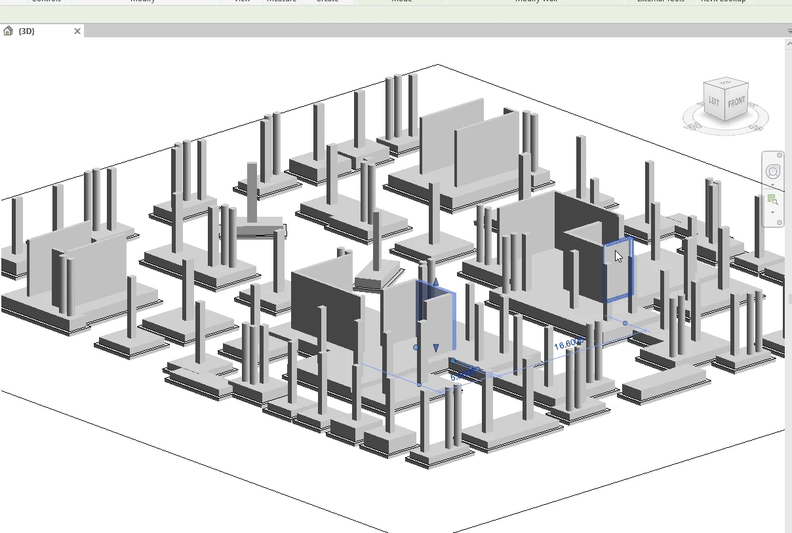

CAD-to-Revit Structural Modeling · Revit Add-in
Columns & RC Walls Modeling
Turn a structural CAD plan into columns and concrete walls.
Model rectangular and circular columns and reinforced-concrete walls from prepared CAD geometry, with shared types, naming prefixes, and explicit base and top levels.
Set naming and levels before placing the floor
Repeated column sizes should use the same type. Group the geometry and define levels before generating the floor, then focus the review on wall centerlines and unusual shapes.
Use CAD plan geometry from the relevant drawing layers as the modeling input.
Auto-detects rectangular columns, circular columns, and RC walls by geometry
Groups identical geometries into shared Revit types
no manual family setup
Auto-naming with user prefix
C → C1, C2, C3… or Column → Column 1, Column 2…
Separate prefix for circular columns (e.g. R1, R2… or CR1…)
Select Base Level and Top Level from combo boxes
placed at exact elevations
RC walls
center lines on a dedicated CAD layer with thickness in the layer name
Manual Revit vs. Columns & RC Walls Modeling
| Task | Manual Revit workflow | With Columns & RC Walls Modeling |
|---|---|---|
| Define column types | Measure the shapes and build rectangular or circular types manually. | Group matching geometry and set separate naming prefixes where needed. |
| Place vertical elements | Place columns, trace walls, and assign base and top levels. | Use the CAD geometry and dedicated wall centerline layer, then select the Revit levels. |
| Review the floor | Check type assignments, wall thicknesses, and elevations. | Review the generated instances, wall thicknesses, and selected levels. |
Modeling columns and RC walls on one floor
Starts from prepared column geometry and wall centerlines with the required layer naming and target Revit levels. Both paths include model review. These are planning estimates. Actual times depend on the model and setup.

Small floor · 15 columns and 5 walls
Manual in Revit
35–60 min
Define types, place columns and walls, and check the levels.
Columns & RC Walls Modeling
1–1.5 min
Set the CAD layers, prefixes, and levels. Generate and review the floor.
33.5–59 min estimated savings
Larger floor · 60 columns and 20 walls
Manual in Revit
100–170 min
Group types, model the elements, and review placements and wall thickness.
Columns & RC Walls Modeling
2–4 min
Generate the floor, review repeated types and wall thickness, and sample-check levels.
96–168 min estimated savings
See how Columns & RC Walls Modeling fits your workflow
Tell us what you’re modeling or reviewing in Revit. We can walk through the workflow and discuss compatibility, licensing, and support. Use Request Package to add the package to your request list.